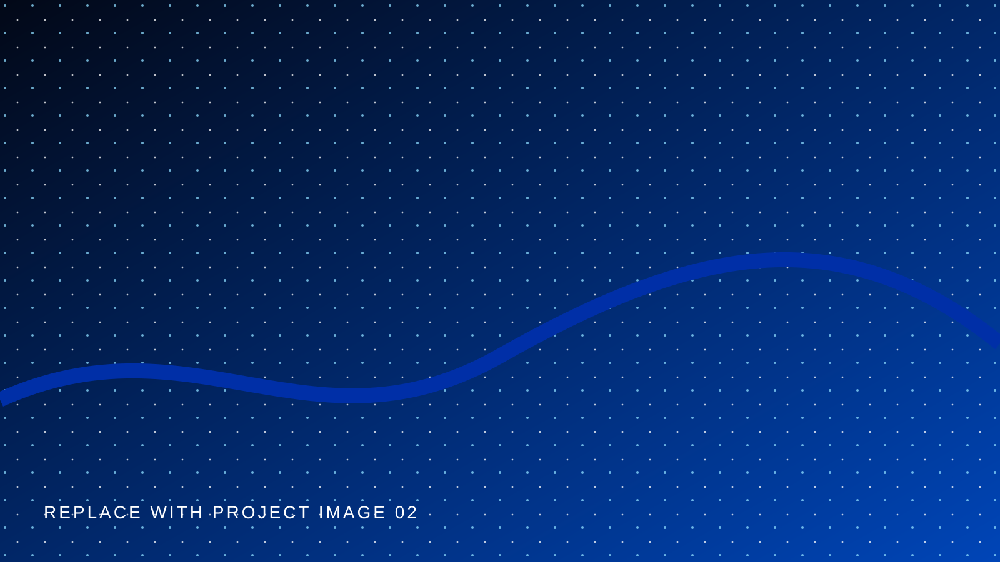
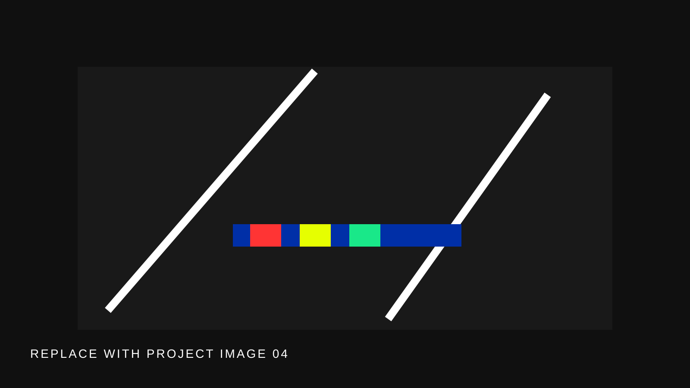

Privacy Spectrum
An exploratory visual system for reading invisible data relationships.
Selected projects across information design, interaction, research, and emerging technology.
An exploratory visual system for reading invisible data relationships.

An interface study about gestures beyond daily routines.

A shared digital space that makes group knowledge visible.

A speculative installation about trust and unexplainable systems.

Short observations in rhythm, atmosphere, and computational image-making.

An evolving index of materials, tests, and conversations with emerging tools.